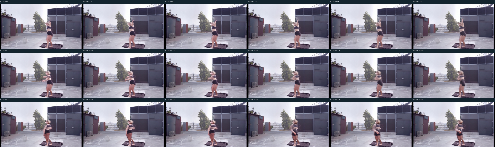

屋顶完整247帧 · 统一DD通路复核
已完整生成并核对源帧845–1091，共247真实帧，15fps，16.47秒。背景保持较稳定，但人物仍有重影，尤其后段；整体画质未通过。不是“待生成”，也不将生成完成写成维修通过。
返回统一通路六案例 · 动作适配器六案例对照
打开1280宽清晰版 · 打开320宽精确预览
4个原生81帧上下文，分别保留81＋80＋80＋6帧；每次续接的I2V图取前段生成结果中对应源时刻的真实RGB。所有上下文都使用同一原始Stage2空背景参考、同一算法与默认参数。没有重复源帧、EOF补帧、RGB混合、平滑或插帧。
下图展示三处上下文交界。925/926与1005/1006附近背景连续；1085/1086附近人物残影和清晰度有变化，仍需继续解决。

247帧来源与逐帧RGB核对记录 · 预览编码与时间核对记录